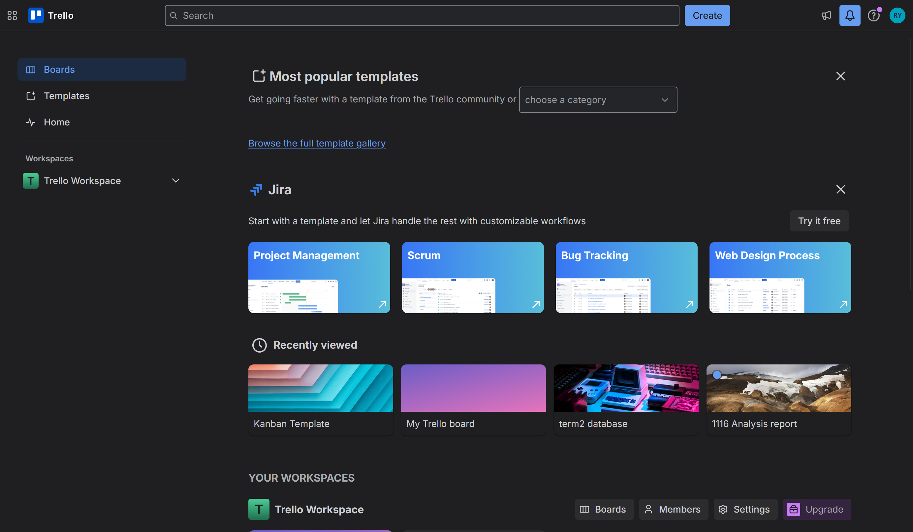
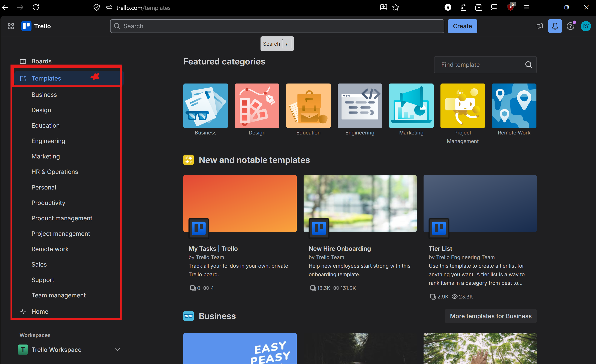
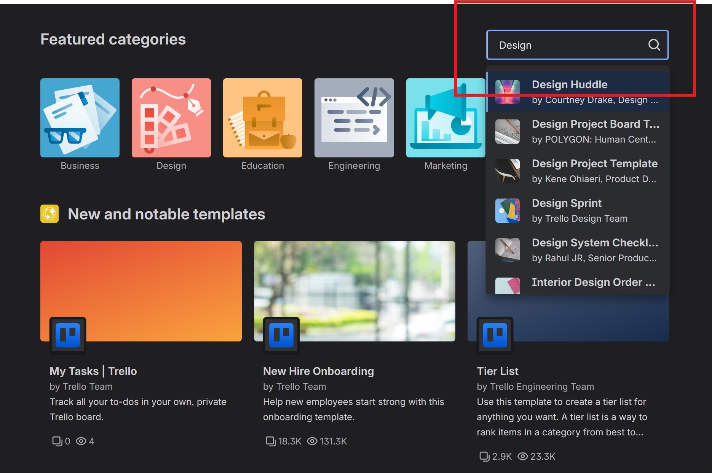
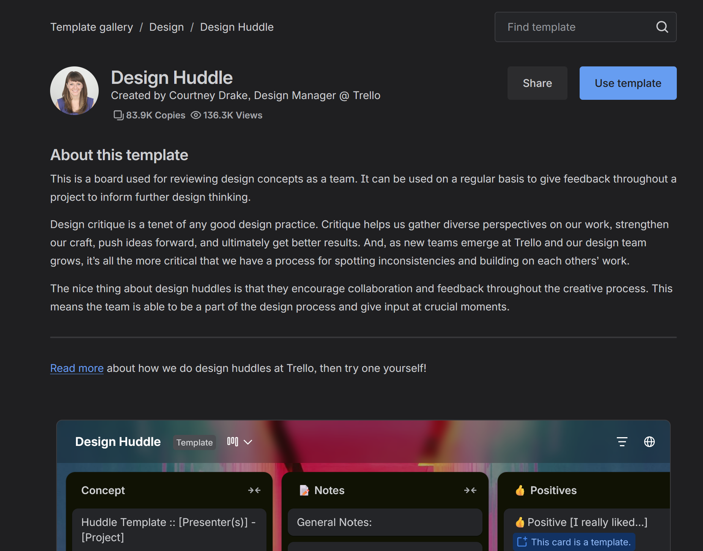
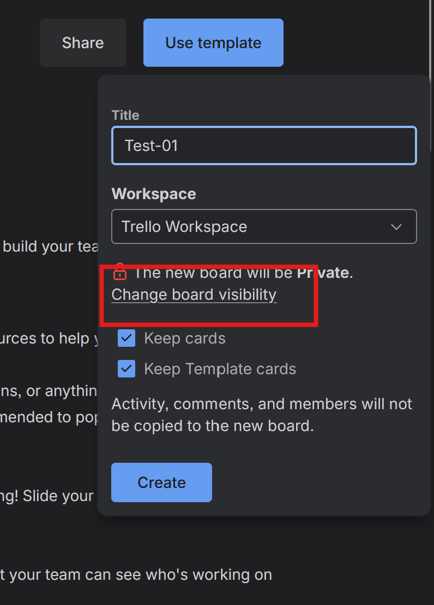

Creating a Board from a Template in Trello
Overview
These instructions explain how to create a new Trello board using a pre-built template. By the end of this task, you will have a ready-to-use board with lists and structure already set up for you, saving you the time of building a board from scratch.
Info
Templates are created by Trello and its community. They come with pre-made lists and cards that you can edit or delete to fit your project.
Creating a Board from a Template
-
Open your browser and go to trello.com.
-
Click [Log In] and enter your credentials.
At this point, you will land on your Trello home dashboard.

-
Click [Templates] in the top navigation bar.
At this point, the Trello template gallery will open showing a wide variety of templates organized by category.

-
Type a keyword into the [Search templates] field, for example project management or software.
Info
You can also browse by category using the left sidebar. Categories include Engineering, Marketing, Education, and more.

-
Click on a template that fits your project to preview it.
At this point, a preview of the template will appear showing its lists and sample cards.

-
Review the template lists and cards to confirm it suits your project needs.
Info
You are not locked in to the template structure. All lists and cards can be renamed, moved, or deleted after the board is created.
-
Click [Use template] on the right side of the preview page.
-
Type a name for your new board in the [Board title] field.
Warning
Do not leave the board title blank. A board with no name will be difficult to identify on your dashboard later.
-
Click [Change Visibility] and select [Private].
At this point, the visibility will update to Private.

-
Click [Keep cards] if you want to keep the sample cards from the template.
Info
For a first-time setup, keeping the sample cards is recommended as they give useful examples of how to structure your tasks.
-
Click [Create board].
At this point, your new board will open with the template structure already in place.
-
Click on any list name and type a new name to customize it for your project, then press Enter.
-
Click [Share] in the top right corner and invite your teammates to the board.
At this point, your teammates will receive an email invitation to join the board.
Info
For instructions on how to invite teammates, see [How to Add a Member to Your Board].
Conclusion
If you have followed these instructions, you should see your new board open with lists and cards already in place from the template you selected. The board title will appear on your Trello home dashboard under [Your Workspaces].
Success
Your board is ready to use. You can now rename lists, delete sample cards, and assign tasks to your teammates.